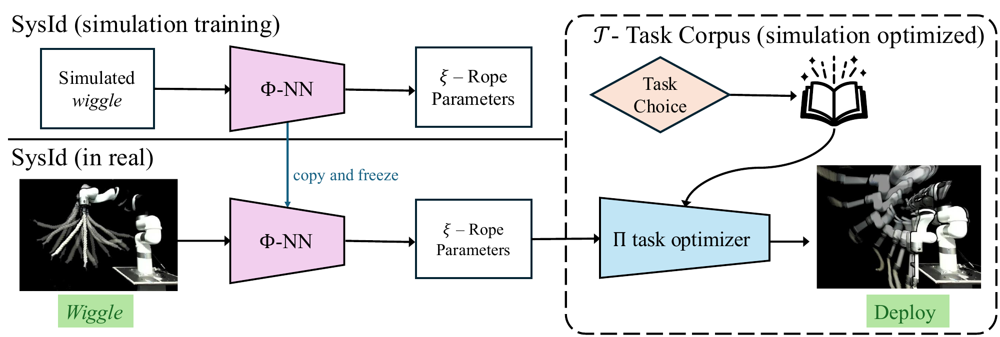

Many robotic tasks are unforgiving; a single mistake in a dynamic throw can lead to unacceptable delays or unrecoverable failure. We introduce Wiggle and Go!, a two-stage framework for zero-shot rope manipulation: a brief, safe wiggle action is observed to predict descriptive rope parameters, which then conditions a trajectory optimizer for zero-shot goal-conditioned execution. Unlike prior dynamic rope manipulation methods that require large real-world datasets or iterative real-world refinement, our identification module is task-agnostic, supporting diverse manipulation policies without retraining. We achieve a 3.55 cm average accuracy on 3D target striking in real using rope system parameters in comparison to 15.29 cm for uninformed baselines, and over 50% success on multi-objective lobbing and draping tasks. Predicted parameters transfer to unseen motions with 0.95 Pearson correlation between simulated and real rope dynamics, indicating that the identification module generalizes across the task corpus.

This section shows the stacked videos of the varying rope parameters performed with the same wiggle motion. It helps us develop intuition about the rope behavior and how it changes with different parameters.
This work used computational resources at Pittsburgh Supercomputing Center through allocation CIS251423 from the Advanced Cyberinfrastructure Coordination Ecosystem: Services & Support (ACCESS) program, which is supported by U.S. National Science Foundation grants #2138259, #2138286, #2138307, #2137603, and #2138296.
We also thank Professor Chris Atkeson for his advice on the paper and Alan Wang for his early work on this project.
I am a masters student in Robotics at Carnegie Mellon University. My fields of interest include: robot learning, manipulation and active perception. I am looking to pursue a PhD in Robotics and Machine Learning. If you have collaboration opportunities or any question about my work, please contact me at ajakobss+wag@cmu.edu.
@article{jakobsson2026wag,
author = {Jakobsson, Arthur and Mahajan, Abhinav and Pullalarevu, Karthik and Suresh, Krishna and Yao, Yunchao and Mao, Yuemin and Duisterhof, Bardienus and Syed, Shahram and Ichnowski, Jeffrey},
title = {Wiggle and Go! System Identification for Zero-Shot Dynamic Rope Manipulation},
journal = {CoRL},
year = {2026},
}